Three canvases, built over time and never reconciled. One consistent experience, without making users relearn a thing.
over.vu is an internal civil engineering project management application used company-wide to manage client work. Three of its features are canvas-based: Automation Builder, People Selection, and Status Gating.
Each canvas was built sequentially, and each improved on the one before it. But none of them was ever brought back in line with the others. The result was an inconsistent experience across all three, and a backlog of user support tickets for each.
The canvases didn’t just look different, they behaved differently. Duplicating a node wasn’t possible on any of them. Multiple conditions per node worked in People Selection and Status Gating, but not in Automations. Deleting a connection on its own worked in People Selection, worked differently in Status Gating, and wasn’t possible in Automations, where removing a connection meant deleting a node.
As Lead Product Designer, I inherited the inconsistency. My job was to unify the three without making users relearn everything they already knew.
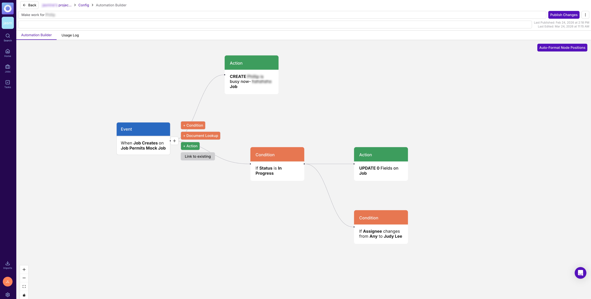
Before · Automation Builder
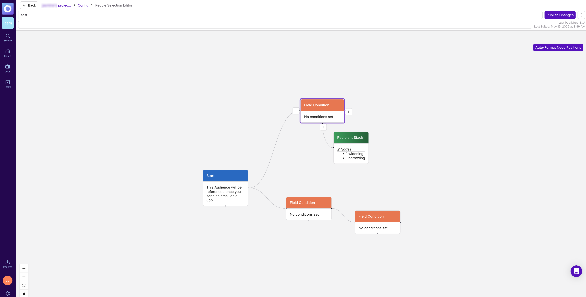
Before · People Selection
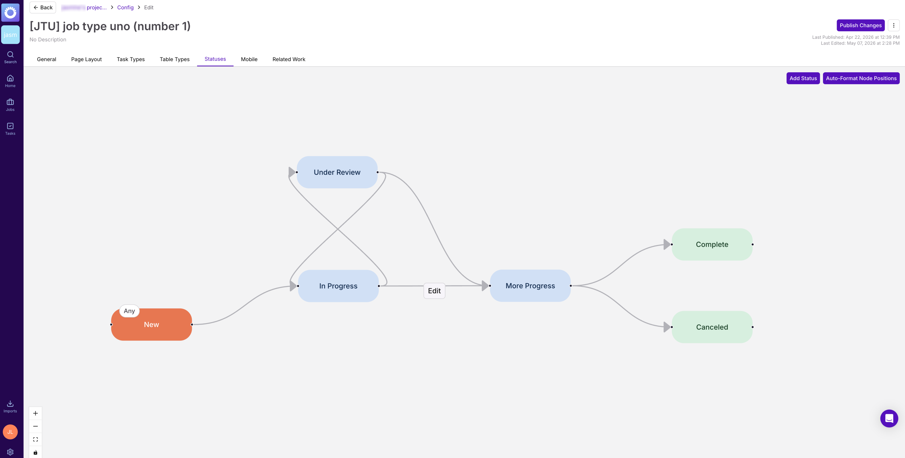
Before · Status Gating
How might we bring three canvas features into one consistent experience, while resolving the pain points users had already reported, and raising the bar on all of them? People Selection was the strongest of the three, so it became the baseline, though its experience still had plenty of room to improve. The goal was to beat it, not just copy it.
I sent a survey to 8 power users across all three features, and 5 of 8 responded. The results were surprisingly positive overall. The frustrations that did come up lined up directly with tickets we already knew about, rather than surfacing anything new.
A positive result isn't a null result. It told us where not to intervene, and that signal shaped a conservative, focused approach: fix what users named, and leave what they'd already learned.
I audited each canvas end to end, documenting screens, nodes, conditions, actions, and interactions. I referenced the React Flow library throughout, so every design change stayed technically feasible.
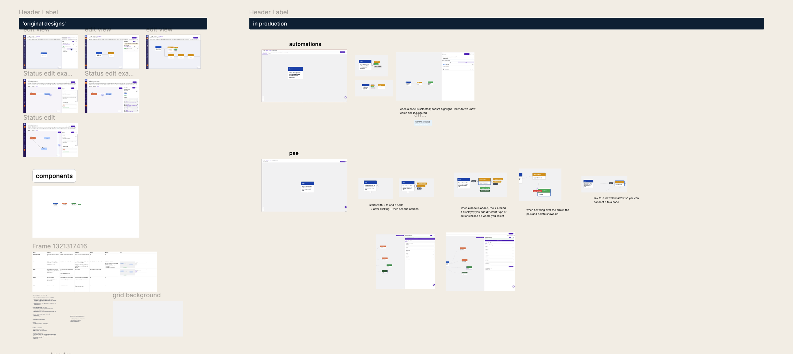
The audit board: screens, nodes, conditions and actions across all three canvases
Three working relationships kept the project aligned from start to finish:
The guiding rule was to simplify the visuals, preserve the flows. Condition and action flows stayed as they were, so users kept the muscle memory they'd already built.
The first direction kept the existing node styling with only slight modifications. It stood out too much on the canvas, and the colors didn’t work well together.
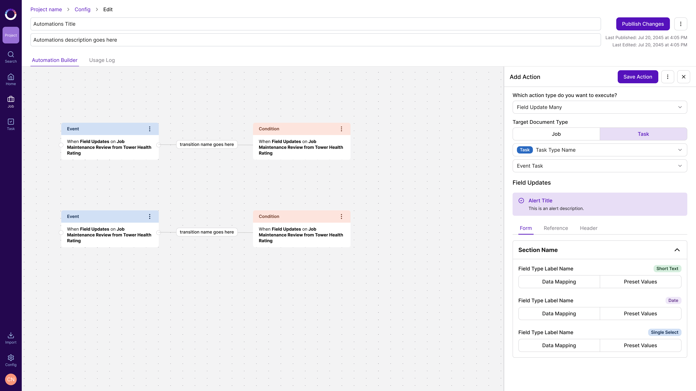
The general action of the node becomes the text, with the node type shown as a badge. The limit: it breaks down when a condition node holds multiple conditions.
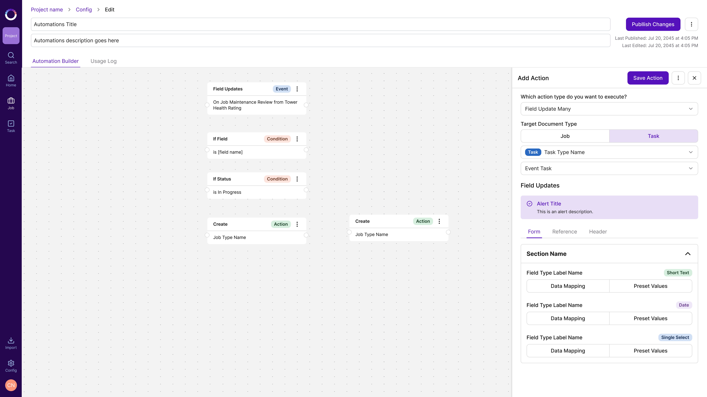
The redesign pulled the strongest ideas from across the three canvases into one shared system. It didn’t just copy People Selection’s best interactions into the other two canvases: for each one, I looked for what could be better, then applied the improved version everywhere.
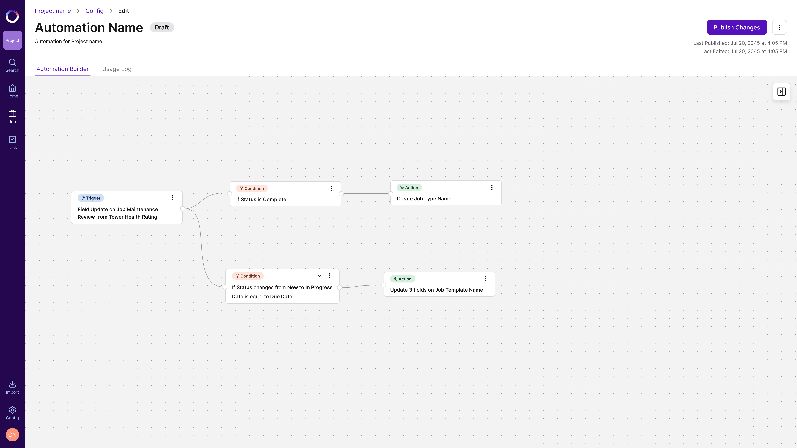
After · Automation Builder
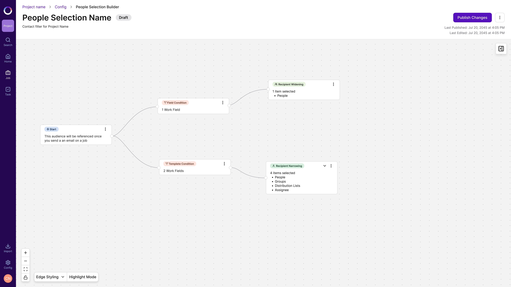
After · People Selection
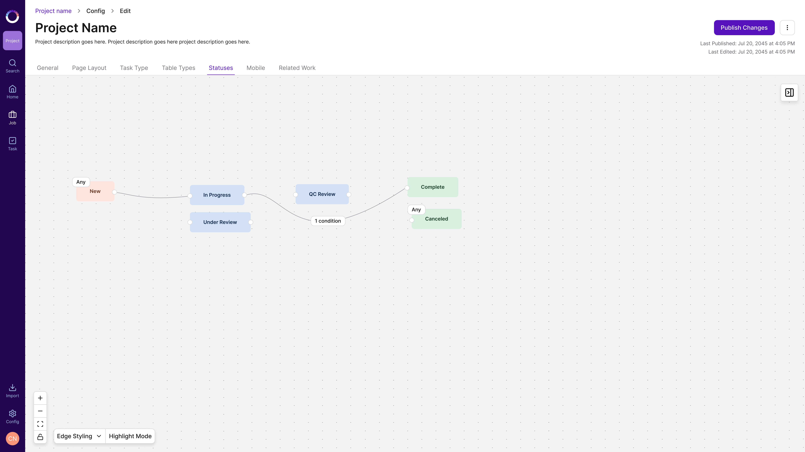
After · Status Gating
Solid color headers were replaced with a simplified pill showing node color and node type. The nodes read more cleanly, and the same visual language now carries across all three canvases.
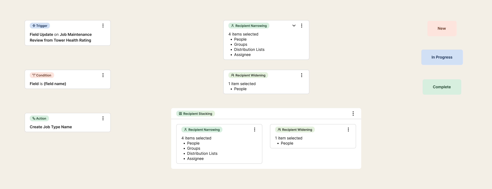
Already available in People Selection, now unified into Automations, so users can build richer logic without stacking extra nodes. The panel itself is improved too: Collapse All / Expand All, a delete button in each condition’s header, a field type badge, and a single Add Condition button where there used to be two. Status Gating’s transition rules are the equivalent: a status only moves to the connected status once its conditions are met. They now use the same side-panel layout instead of a modal.
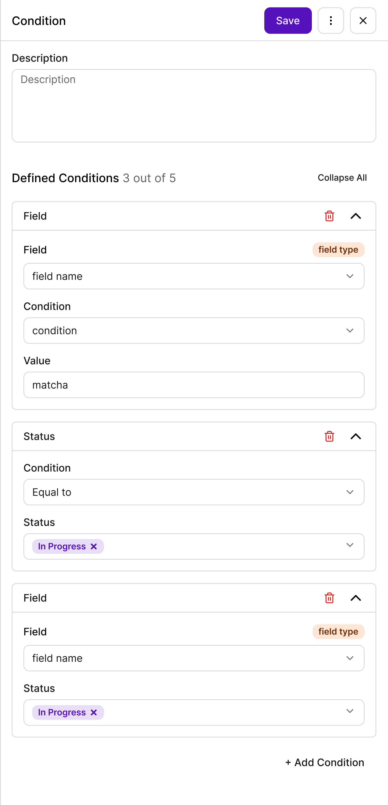
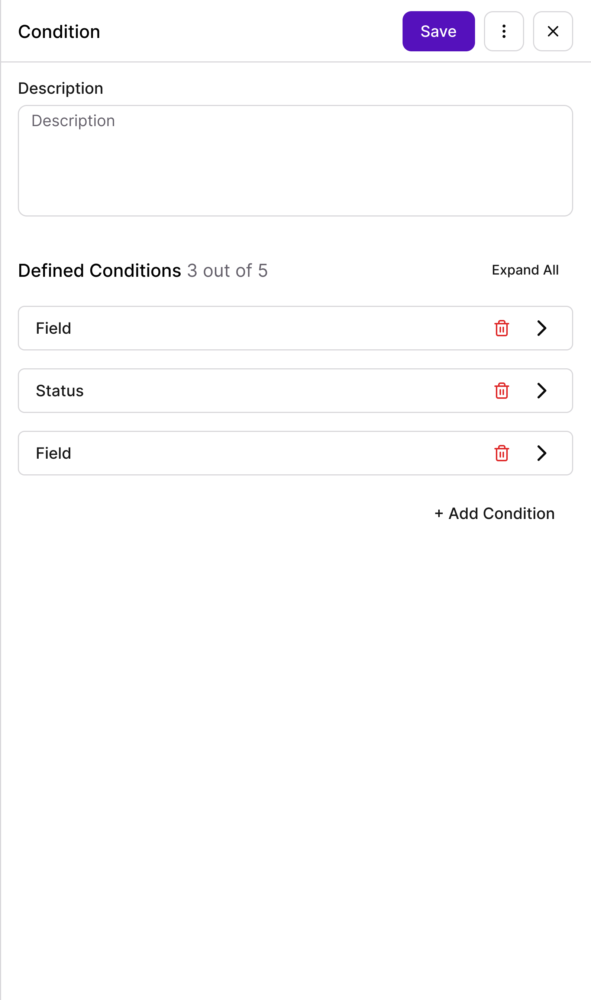
Select a connection to add a node in between, relink it to a different node, or delete it. Before, the only way to remove a connection was to delete a node, one at a time. Now you can delete a connection without removing the node, and reconnect the nodes. Adding a node between two nodes is new; People Selection didn’t have it. People Selection did already have a version of relinking and deleting, so the updated design improves that interaction and brings it to Automations and Status Gating too, fixing a long-standing friction point.
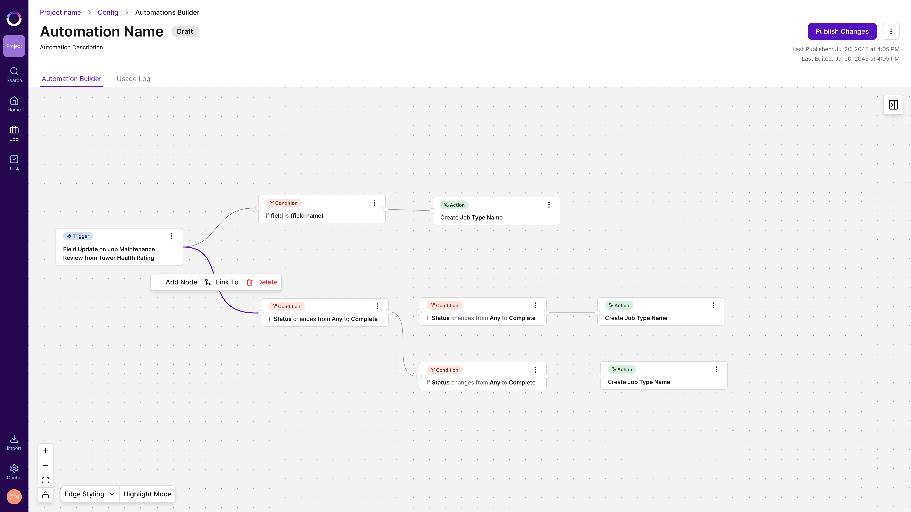
Duplicating a node is now available on all three canvases, closing one of the most-requested tickets.
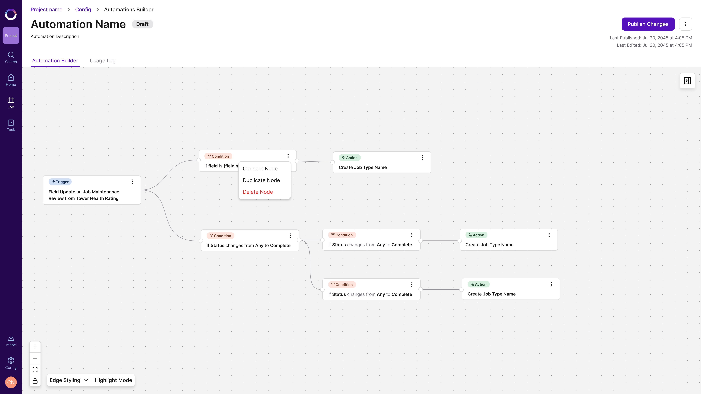
The deliverable was an extensive annotated handoff with a detailed breakdown of the specific changes across all three features. Alongside it, the full canvas audit gave engineering and QA a shared reference for what each canvas did before, and what it should do now.
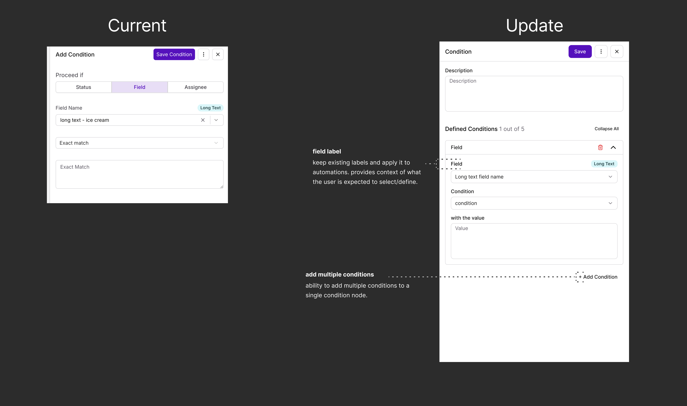
Annotated handoff: Automation Builder
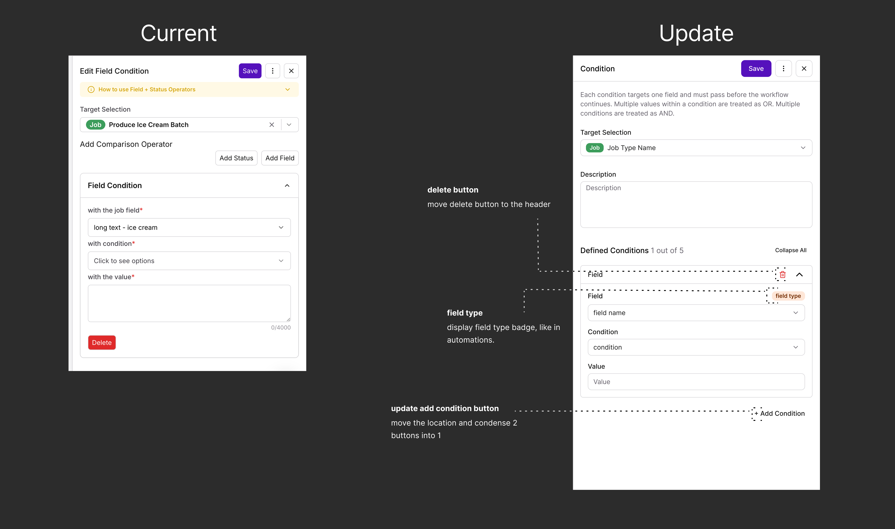
Annotated handoff: People Selection
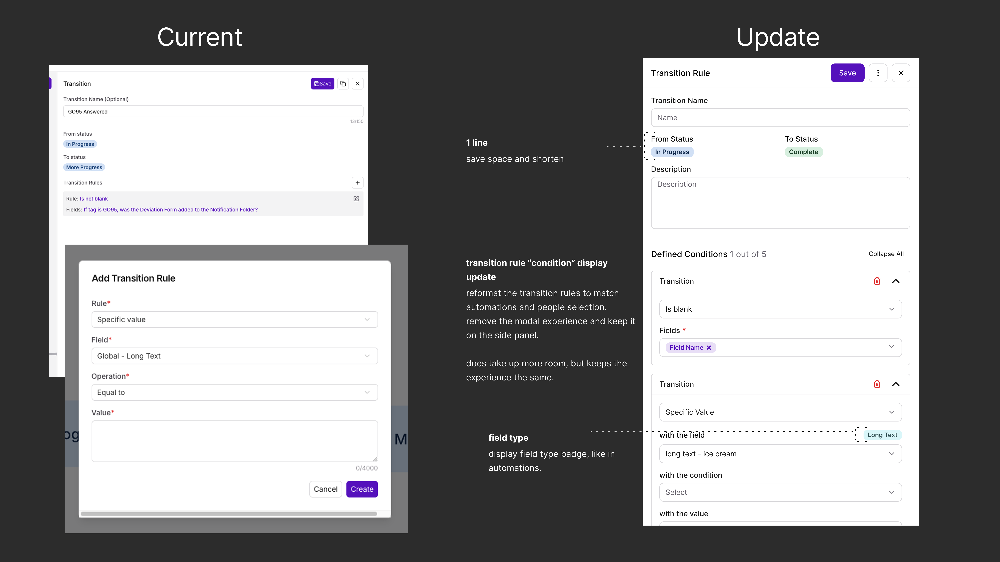
Annotated handoff: Status Gating
The unified canvas launched successfully, with extremely positive UAT and post-launch feedback from users and stakeholders. More than 12 user-reported pain points were addressed across the three canvases. There have been no new bug tickets, errors, or frustration reports since launch. If anything, users are now asking for more capabilities within Automations, a sign the unified experience raised their confidence in the product.
Drop in median configuration time, from about 6 minutes to about 1 minute 21 seconds, as users got faster and more confident with the unified canvas.
Post-launch Amplitude data confirms adoption of every newly introduced interaction. All figures below are from launch to day 90.
The primary canvas action. 720 condition-to-condition, 152 trigger-to-node, 37 action connections.
134 condition nodes and 46 action nodes. A real pain point, confirmed by usage.
Confirms the friction of the old behavior was real.
Smaller, but active adoption.
Of users who add a node, over 82% go on to configure and publish their automation.
Most contain 3–7 nodes. Users are building real, multi-step workflows.
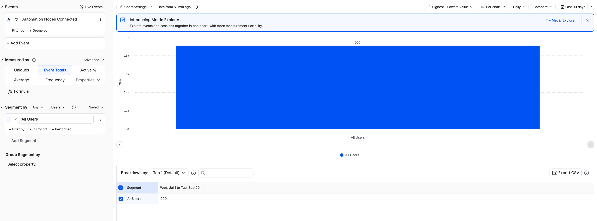
Amplitude: Automation Nodes Connected, launch to day 90
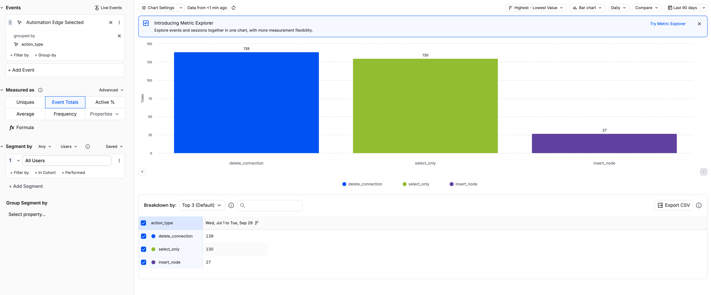
Amplitude: Automation Edge Selected by action type, launch to day 90
Status Gating showed the clearest behavior shift. Users naturally chose drag-and-drop (12 times) and the add node button (6 times) over the legacy on-screen button. The unified interaction pattern was internalized without friction. Edge insert was used just once, consistent with it being a power feature.
Three features that grew up separately now behave like one product. The unification worked because it respected what users had already learned: the research set the boundaries, the audit made the gaps visible, and the handoff left no room for ambiguity.
Known tickets addressed:
What I took from it: a positive survey result wasn't a reason to under-deliver. It was a reason to be precise. Knowing what users were happy with let me spend the whole redesign on what they weren't. Consistency was the goal, but the improvements are what users noticed: they’re now asking for more capabilities within Automations.